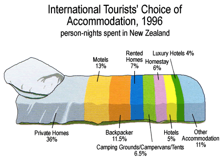
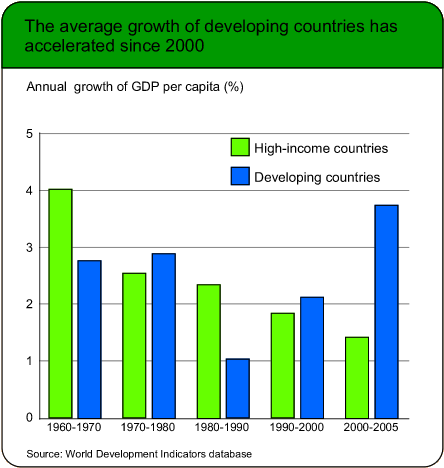
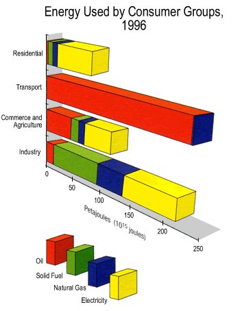
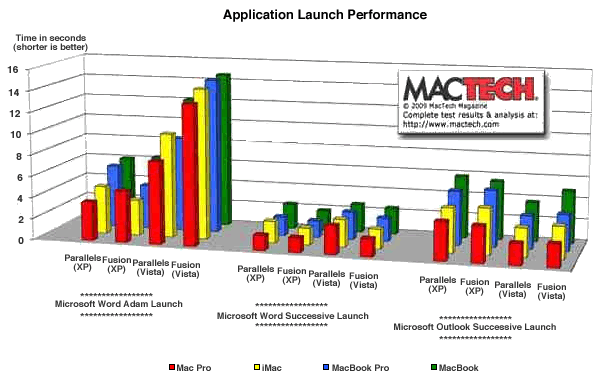
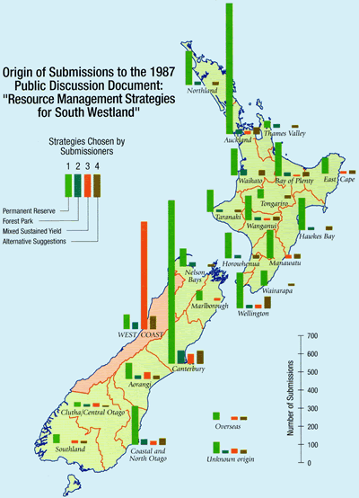
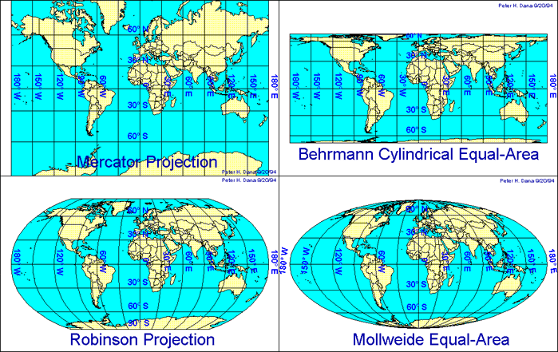
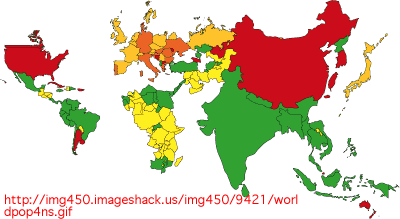
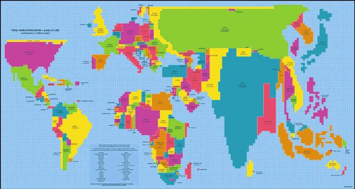
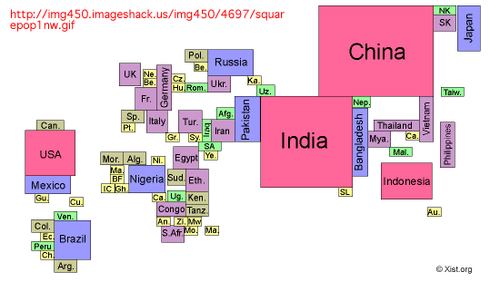
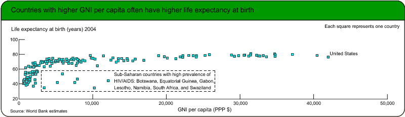

If you don't want to print now,
To effectively convey information from data, a table must accentuate the important features in the data (signal) and minimise the impact of other distractions (noise). This noise may be unimportant aspects of the data (data noise) or unnecessary ink used to draw it and a table should be formatted to avoid both.
Avoiding noise
Varying the spacing of rows and columns to group associated values is usually more effective than adding lines. Never use gridlines to box all values — they are non-data noise.
Usually round values to 2 or 3 significant digits in tables — any further digits are data noise that make it harder to see patterns in the values.
Formatting to accentuate the signal
The eye can pick out patterns by scanning down a column of values more easily than by scanning across a row, so consider swapping the rows and columns to make the most meaningful comparisons down columns.
Reordering rows and columns can also accentuate the information in large tables. For example, if the rows correspond to different countries, ordering them alphabetically is rarely best — consider ordering them in more meaningful ways.
Tables from spreadsheets
Never publish tables in which all values are boxed (the default format for tables produced by many spreadsheets). Consider using a bold typeface for headings or using extra white space to separate rows and columns as an alternative to lines.
| Reason | No. | % |
| Needle/Surg. Injuries | 279 | 0.2 |
| Rape | 1502 | 0.8 |
| TB | 1564 | 0.9 |
| STI | 2745 | 1.5 |
| Med Exam | 4717 | 2.6 |
| Clinical Suspicion | 15387 | 8.5 |
| PMTCT | 45590 | 25.0 |
| VCT | 102443 | 56.3 |
| Other | 7825 | 4.3 |
The table below presents the data more effectively.
| Reason | No. | % |
| Needle/Surg. Injuries | 279 | .2 |
| Rape | 1,502 | .8 |
| TB | 1,564 | .9 |
| STI | 2,745 | 1.5 |
| Med Exam | 4,717 | 2.6 |
| Clinical Suspicion | 15,387 | 8.5 |
| PMTCT (pregnancy) | 45,590 | 25.0 |
| VCT (voluntary) | 102,443 | 56.3 |
| Other | 7,825 | 4.3 |
Large tables
In large tables, it can be difficult to read across rows. To help the eye to match values on the same line, hairlines can be drawn between occasional rows, or some rows can be printed on a very light grey background.
Layout
Think carefully about how to arrange the rows and columns. Values that we want to compare should be close to each other, ideally in a column. Judicious use of white space can help to show the structure of complex tables.

The layout above has little structure. The table below contains the same information but is easier to understand.

Annotation
When a table is included in a report, the main information that can be gained from the table should also be summarised in the body of the report in words.
Do not simply repeat the values in the table. The annotation should summarise and interpret.
Signal and noise
The useful information in a graphical or tabular display of data is called its signal. Parts of the display that do not contain information that can be usefully interpreted are called noise. We can distinguish:
Noise make it harder to detect the signal in a display and should be avoided.
Significant digits
Many tables contain values that are reported with more significant digits than necessary. Usually the pattern of values in a table can be understood from only their first 2 or 3 digits — the remaining digits are data noise.
| June 2006 | June 2005 | June 2004 | |||
|---|---|---|---|---|---|
| Total | % variation from prev year | Total | % variation from prev year | Total | |
| Cars | 2,232,915 | 2.00 | 2,189,187 | 3.35 | 2,118,240 |
| Rental cars | 21,754 | -3.76 | 22,604 | 2.15 | 22,128 |
| Taxis | 8,011 | -1.97 | 8,172 | 1.03 | 8,089 |
| Trucks | 408,757 | 2.23 | 399,843 | 3.51 | 386,295 |
| Buses/coaches | 16,486 | 5.20 | 15,671 | 4.95 | 14,932 |
| Trailers/caravans | 420,289 | 2.76 | 408,982 | 2.99 | 397,113 |
| Motorcycles | 43,513 | 15.37 | 37,717 | 8.16 | 34,873 |
| Mopeds | 14,171 | 37.82 | 10,282 | 19.32 | 8,617 |
| Tractors | 27,124 | 2.27 | 26,521 | 4.91 | 25,279 |
| Exempt vehicles | 11,130 | 7.77 | 10,328 | 6.39 | 9,708 |
| Miscellaneous | 22,464 | 7.25 | 20,946 | 9.06 | 19,206 |
| Total | 3,226,614 | 2.42 | 3,150,253 | 3.47 | 3,044,480 |
Reducing the number of significant digits and rearranging the columns makes the information easier to understand.
| Number in June (thousand) | Percentage change | |||||
|---|---|---|---|---|---|---|
| 2006 | 2005 | 2004 | 2005-6 | 2004-5 | ||
| Cars | 2,233 | 2,189 | 2,118 | 2.0 | 3.4 | |
| Rental cars | 22 | 23 | 22 | -3.8 | 2.2 | |
| Taxis | 8 | 8 | 8 | -2.0 | 1.0 | |
| Trucks | 409 | 400 | 386 | 2.2 | 3.5 | |
| Buses/coaches | 17 | 16 | 15 | 5.2 | 5.0 | |
| Trailers/caravans | 420 | 409 | 397 | 2.8 | 3.0 | |
| Motorcycles | 44 | 38 | 35 | 15.4 | 8.2 | |
| Mopeds | 14 | 10 | 9 | 37.8 | 19.3 | |
| Tractors | 27 | 27 | 25 | 2.3 | 4.9 | |
| Exempt vehicles | 11 | 10 | 10 | 7.8 | 6.4 | |
| Miscellaneous | 22 | 21 | 19 | 7.3 | 9.1 | |
| All licensed vehicles | 3,227 | 3,150 | 3,044 | 2.4 | 3.5 | |
Percentages and proportions
It is often easier to understand proportions (or percentages) than raw counts. This is particularly important for comparing groups of individuals. The table below shows the origin and 'lifestage' of tourists (in thousands) arriving in Hawaii in 2005.
| US West | US East | Japan | Canada | Europe | |
| Wedding/honeymoon | 103.1 | 110.0 | 192.7 | 8.0 | 131.5 |
| Family (with children) | 667.1 | 297.1 | 485.6 | 44.5 | 94.4 |
| Young (18-34) | 403.3 | 243.1 | 229.1 | 38.8 | 210.1 |
| Middle aged (35-54) | 955.2 | 634.7 | 308.0 | 75.1 | 374.2 |
| Seniors (55+) | 903.7 | 643.5 | 303.5 | 82.3 | 314.6 |
| Total | 3,032.5 | 1,929.3 | 1,517.4 | 248.6 | 1,123.7 |
The information is easier to understand as percentages within each country of origin. Scanning across rows in the table below, the highlighted percentages stand out as 'unusual'.
| US West | US East | Japan | Canada | Europe | |
| Wedding/honeymoon | 3.4 | 5.7 | 12.7 | 3.2 | 11.7 |
| Family (with children) | 22.0 | 15.4 | 32.0 | 17.9 | 8.4 |
| Young (18-34) | 13.3 | 12.6 | 15.1 | 15.6 | 18.7 |
| Middle aged (35-54) | 31.5 | 32.9 | 20.3 | 30.2 | 33.3 |
| Seniors (55+) | 29.8 | 33.3 | 20.0 | 33.1 | 28.0 |
| Total | 100.0 | 100.0 | 100.0 | 100.0 | 100.0 |
Ratios
It is sometimes better to divide values by some measure of 'size' before analysis or display.
Comparing values down columns
It is easiest to compare values if they are close together in a table. The layout and use of white space should be used to encourage comparison of related values.
In particular, it is easier to compare values down columns than across rows — their most significant digits are closer — so carefully consider whether to swap the rows and columns of a table.
Order for the rows of a table
In many tables, the rows are ordered alphabetically by their row names, but it is usually better to reorder them in another meaningful way.
If there is no better ordering, sort the rows into decreasing order of the values in the column of most interest.
Tourist arrivals in South Africa
The following table was published as part of a report on tourism in South Africa. It describes the origin of tourist arrivals in 2004 and the amounts that they spent in South Africa (excluding capital expenditure).
| Average spend in SA | Number of arrivals | ||
|---|---|---|---|
| ALL FOREIGN TOURISTS | R 7,920 | 6,677,839 | R 43,220,861,797 |
| AFRICA & MIDDLE EAST | R 7,333 | 4,673,724 | R 27,572,457,398 |
| Angola | R 9,561 | 28,543 | R 272,899,623 |
| Botswana | R 3,678 | 802,715 | R 2,952,385,770 |
| Kenya | R 7,235 | 19,549 | R 141,437,015 |
| Lesotho | R 2,629 | 1,470,953 | R 3,867,135,437 |
| Malawi | R 7,164 | 89,205 | R 639,064,620 |
| Mozambique | R 20,990 | 355,840 | R 7,469,081,600 |
| Namibia | R 6,141 | 225,882 | R 1,387,141,362 |
| Nigeria | R 8,091 | 23,441 | R 189,661,131 |
| Swaziland | R 3,754 | 849,176 | R 3,187,806,704 |
| Tanzania | R 11,474 | 10,991 | R 126,110,734 |
| Zambia | R 7,186 | 121,384 | R 872,265,424 |
| Zimbabwe | R 7,702 | 551,113 | R 4,244,672,326 |
| Unspecified | R 8,043 | 151,432 | R 1,217,967,576 |
| Other Africa and Middle East | R 8,043 | 124,932 | R 1,004,828,076 |
| AMERICAS | R 8,838 | 290,625 | R 2,281,015,481 |
| Brazil | R 7,561 | 21,137 | 159,816,857 |
| Canada | R 8,281 | 37,170 | R 307,804,770 |
| USA | R 7,872 | 208,159 | R 1,638,627,648 |
| Other Americas | R 7,234 | 24,159 | R 174,766,206 |
| ASIA & AUSTRALASIA | R 8,331 | 275,001 | R 2,328,135,275 |
| Australia | R 8,867 | 75,675 | R 671,010,225 |
| China (including Hong Kong) | R 9,567 | 51,080 | R 488,682,360 |
| India | R 8,834 | 36,172 | R 319,543,448 |
| Japan | R 6,555 | 23,091 | R 151,361,505 |
| Other Asia and Australasia | R 7,839 | 88,983 | R 697,537,737 |
| EUROPE | R 8,480 | 1,287,057 | R 11,039,253,643 |
| France | R 6,647 | 109,276 | R 726,357,572 |
| Germany | R 8,824 | 245,452 | R 2,165,868,448 |
| Italy | R 7,496 | 50,429 | R 378,015,784 |
| Netherlands | R 8,199 | 120,838 | R 990,750,762 |
| Sweden | R 9,017 | 32,247 | R 290,771,199 |
| UK | R 8,956 | 456,368 | R 4,087,231,808 |
| Other Europe | R 8,810 | 272,447 | R 2,400,258,070 |
This table can be improved by removing grid lines, decreasing the number of significant digits, and reordering the countries within each region.
| Arrivals (000) |
Total expenditure (R 000,000) |
Average spend (R 000) |
|
| ALL FOREIGN TOURISTS | 6,678 | 43,221 | 7.9 |
| AFRICA & MIDDLE EAST | 4,674 | 27,572 | 7.3 |
| Lesotho | 1,471 | 3,867 | 2.6 |
| Swaziland | 849 | 3,188 | 3.8 |
| Botswana | 803 | 2,952 | 3.7 |
| Zimbabwe | 551 | 4,245 | 7.7 |
| Mozambique | 356 | 7,469 | 21.0 |
| Namibia | 226 | 1,387 | 6.1 |
| Zambia | 121 | 872 | 7.2 |
| Malawi | 89 | 639 | 7.2 |
| Angola | 29 | 273 | 9.6 |
| Nigeria | 23 | 190 | 8.1 |
| Kenya | 20 | 141 | 7.2 |
| Tanzania | 11 | 126 | 11.5 |
| Unspecified | 151 | 1,218 | 8.0 |
| Other Africa and Middle East | 125 | 1,005 | 8.0 |
| EUROPE | 1,287 | 11,039 | 8.5 |
| UK | 456 | 4,087 | 9.0 |
| Germany | 245 | 2,166 | 8.8 |
| Netherlands | 121 | 991 | 8.2 |
| France | 109 | 726 | 6.6 |
| Italy | 50 | 378 | 7.5 |
| Sweden | 32 | 291 | 9.0 |
| Other Europe | 272 | 2,400 | 8.8 |
| AMERICAS | 291 | 2,281 | 8.8 |
| USA | 208 | 1,639 | 7.9 |
| Canada | 37 | 308 | 8.3 |
| Brazil | 21 | 160 | 7.6 |
| Other Americas | 24 | 175 | 7.2 |
| ASIA & AUSTRALASIA | 275 | 2,328 | 8.3 |
| Australia | 76 | 671 | 8.9 |
| China (including Hong Kong) | 51 | 489 | 9.6 |
| India | 36 | 320 | 8.8 |
| Japan | 23 | 151 | 6.6 |
| Other Asia and Australasia | 89 | 698 | 7.8 |
Graphs and tables
There is a common saying that "a picture is worth a thousand words". This is particularly true in the context of understanding the information in data. Tables and text may display a wealth of detailed information, but a well-designed graph can be much more effective in highlighting the important features in the data.
This section introduces some graphical displays of the types of tabular data described in the previous section.
Bar charts
The most important graphical display of a simple table of values is a bar chart. Each category is represented by a bar whose length is proportional to its value.
The bars can be oriented either vertically or horizontally. Vertical bars are often used for small tables, but if there are many categories or if the category names are long, a horizontally oriented bar chart is usually clearer. A gridlines behind the bars can help to read off values, but they should be very faint so that the bars remain prominent.
Infant mortality rate in New Zealand
The indigenous people in New Zealand are Maori who form about 15% of the population. Most of the others are of European descent with a sizeable number of immigrants from adjacent Pacific Islands (about 7%).
The frequency table and bar chart below show the infant mortality rates per 1,000 live births for these three ethnic groups in 2001.
Click on any bar to see how its height equals the ethnic group's infant mortality rate in the frequency table.
The pop-up menu can be used to change the orientation of the bar chart and the two checkboxes can be used to add the numerical values of actual mortality rates. If possible, it is better to print values inside the bars to avoid giving the visual impression that the bars are longer than they are.
Proportions
If the values form a frequency table or a partition of some other total quantity, a second axis can be added to the bar chart, allowing both values and proportions to be read off the graph.
Tanzania drinking water
The bar chart below shows the sources of drinking water for rural households in Tanzania in the dry season of 2002.
In this example, a second axis shows the percentage of households in each category. Click any bar to read off the corresponding number and percentage.
Note that horizontal bars are better than vertical ones for this example since there are many categories with long names.
Ordering
Sometimes the categories in a table or bar chart have a natural ordering. For example,
In such tables, the categories should be kept in this natural order.
When there is no natural ordering of the categories, the order of the categories in a table or bar chart is arbitrary. For example, in a frequency table (or the corresponding bar chart) of causes of death, there is no natural way to order the causes (heart disease, stroke, accident, ...) so they can be placed in any order on a bar chart.
Alphabetical ordering of the categories is rarely best.
Ordering by size
When there is no natural ordering of categories, it is often useful to arrange them in decreasing order of their values. The larger values are often more 'important' in some way, so this ordering helps them to stand out.
When this type of ordered bar chart is drawn for values that are a partition of some total, it is often called a Pareto diagram. It is named after an Italian economist in the late 1800's who found that about 80 percent of the wealth of a region was concentrated in less than 20 percent of the population. (Pareto diagrams are particularly useful in industrial quality control and quality improvement where information is collected about the causes of problems in manufacturing processes.)
However if there is a category 'Other' or 'Unknown', then it should be kept at the end, even if its value is larger than others.
R&D expenditure in OECD
The barchart below shows the expenditure on Research and Development in all OECD countries in 2005 (or the latest available figures), expressed as a percentage of Gross Domestic Product (GDP).
The countries are initially arranged alphabetically. Click the checkbox Sorted values to rearrange them in decreasing order of R&D expenditure. In the reordered table, it is easier to identify the countries with highest and lowest R&D expenditure and to understand the rank of individual countries.
Quantities and zeros
Most tables contain values that are quantities — values in which zero has special meaning. Ideally, when a bar chart is used to represent the data, the bars should all extend up from zero, so that the amount of ink on the paper is proportional to the quantity.
Bar lengths should be proportional to the values.
Some data sets contain values that are very close together and all bars would visually seem to be the same if a bar chart was drawn properly. There is then no alternative but to violate this principle in order to graphically represent the data. A bar chart can be drawn to a scale that starts at a value higher than zero, but it is important to clearly indicate that the scale no longer starts at zero with zig-zags at the bottom of the axis and/or bars.
Life expectancy in Western Europe
The bar chart below shows life expectancies for males in some of the larger countries in Western Europe in 2003.
Since all values are between 74 and 78, the bars all have similar heights and the bar chart does not effectively show differences between the countries. Click Expand scale to change the vertical scale so that it starts at 70 instead of zero.
The resulting scale distinguishes the countries better, but note the use of zig-zags at the bottom of the bars to highlight the fact that they no longer start at zero.
Negative values
Some data sets describe quantities that can be negative. In particular, many demographic and economic statistics can increase or decrease from year to year, so their changes can take either sign.
Such quantities can be represented on a bar chart with bars extending on both sides of zero. It is best to use a different colour or shading for the bars representing the negative values so that the negative values stand out.
Projected population changes in New Zealand
The next bar chart shows projected regional population changes in the period 2001-2026. The population is projected to decrease in some regions, so their bars ard drawn to the left of zero.

Small data sets
If a simple table has only a few distinct categories, the information in it can be very simply expressed. If there are only two categories, the information can often be expressed in text as efficiently as in a bar graph.
Previous custodial sentences for sentenced prisoners
The bar chart below describes the numbers of New Zealand sentenced prisoners in 2003 who had a previous custodial sentence.
This bar chart is only based on two numbers — 2,108 prisoners had no previous sentence and 2,987 had a previous sentence. The information can be expressed equally clearly in the boxed text below:
41.4% of the 5,095 sentenced prisoners had no previous custodial sentence.
Chartjunk
Since the information contained in a bar chart is often simple (only 2 values above), it is tempting to embellish bar charts 'artistically' to make them more visually appealing. These additions are collectively called chartjunk. Many spreadsheets, such as Microsoft Excel, make it easy to add chartjunk to bar charts.
In general, chartjunk should be avoided — it is usually easier to read information from a standard bar chart. Rather than adding chartjunk, draw the bar chart small or to replace it with a frequency table.
Three-dimensional chartjunk
A common form of chartjunk is obtained by changing each bar into a 3-dimensional object. When the resulting 3-dimensional picture is rotated, it often becomes harder to compare the heights of bars and to read off values from the axes. In particular, perspective views should be avoided.
Origin of tourists arriving in Hawaii
The bar chart below describes the placed of origin of all tourists arriving in Hawaii in 2001.
This bar chart can be rotated. Hold the mouse button down in the centre of the diagram and drag to rotate. (Alternatively, the buttons on the right can be used to rotate the diagram.
Although this diagram looks more 'artistic' than a simple bar chart, it is harder to read off the numbers of arrivals from each region, especially for more 'extreme' rotations. Click Show 2D to see a simple bar chart that displays the information more effectively.
Tanzania drinking water
The diagram below was produced by Microsoft Excel to show the distribution of the sources of household drinking water in the dry season of the 2002/3 agricultural year.
The rotation and perspective viewpoint of the diagram make it an extremely poor representation of the data. For example, can you estimate the number of households using protected wells?
Avoid drawing bar charts in 3-dimensions.
Replacing bars with objects
A second type of chartjunk is obtained by replacing the rectangular bars in a barchart with pictures of objects. This a much more serious problem since it often visually mis-represents the proportions in the different categories. Are the values proportional to the heights of the objects, their areas on the paper or their 3-dimensional volumes? At a quick glance, most readers would use something between area and volume though it is usually the heights of the bars that actually determine the size of the objects in this type of diagram.
Recreational participation in New Zealand
The diagram below was published to show the percentage of men and women participating in various recreational activities in 1996,

This diagram can be criticised in several ways (e.g. the 'women' stand a little above the axis and it appears that no women do running or jogging whereas this category is just not in the 'top ten activities for women so it has been omitted). However the main problem is illustrated by a comparison of Gardening and Swimming. The proportion of women doing Gardening is less than twice the proportion doing Swimming, but the difference seems much greater since the area of the Gardening woman is about 4 times greater and her volume is about 8 times greater.
Using pictures of objects instead of bars in a barchart is misleading and must be avoided.
Merit raises
The next example is not one from official statistics but is particularly misleading. As part of a study of how merit pay policies are tied to employee performance, data were collected about the merit raises (measured as a percentage of salary) for 3,990 employees in a large company. The diagram below was published to summarise the data.
Again, the visual impression is misleading because the widths of the carrots also change. In particular, the employees getting under 5% merit increase seem visually unimportant, but they comprise nearly 10% of the total employees.
If you are determined to use pictures...
Pictures in bar charts are really chartjunk and should be avoided — they do not make the information in the data clearer and have the potential to mislead. However if you are determined to use them, it is much less misleading to use stacks of pictures that are all of the same size.
Example
The bar chart below might be used to represent some aspect of car ownership or accidents.
Simple bars would be clearer, but the 'ink' used in each stack of cars is roughly proportional to the group's value, so the diagram does not badly mislead.
Chartjunk
As with bar charts, pie charts are often graphical representations of a small number of values. For example, a pie chart of the gender of students in a class is only based on a single value, the proportion of males. As a result, there is a temptation to 'enhance' pie charts as 3-dimensional objects — chartjunk.
Resist the temptation — it does not make the data any easier to understand and may indeed be misleading since 3-dimensional pie charts can over-emphasise the categories closest to the viewer.
Tourist expenditure in Hawaii
The pie chart below describes the money that tourists spent in Hawaii in 2006. (The total tourist expenditure was $12,380,900,000 in that year.)
This diagram is 3-dimensional. Press the mouse in the centre of the pie chart and drag (with the mouse held down) towards the top left to rotate the diagram. The slider can be used to alter the thickness of the pie.
The simple pie chart is equally effective for displaying the data. If the rotation is extreme or the pie is thick, the rotated pie chart can exaggerate the importance of the front categories.
Variations
The following diagrams show other 3-dimensional variations of the basic pie chart. In both cases, the extra dimension is chartjunk — neither improves on a basic 2-dimensional pie chart.
Local authority income
The doughnut chart below describes the sources of income of New Zealand local authorities in 1996.

The annotations provide an alternative to a table and key accompanying the diagram, but the 3rd dimension is not helpful.
Marital status on first birth
In the following pie chart, all slices have been 'exploded'.
Although it is occasionally helpful to explode one group of categories in a single slice to highlight their combined contribution to the total, the information in the pie chart is blurred if this is done to all categories. And, of course, the 3rd dimension does not help at all.
Small is beautiful
In general, it is better to draw a standard pie chart smaller rather than embellishing it with chartjunk.
Marital status on first birth?
The simpler small pie chart below shows the data more clearly than the exploded 3-dimensional pie chart that was published.
Pictographs
We mentioned earlier that the use of 2- and 3-dimensional pictures to replace the bars on a bar chart can be misleading since the visual impact of any bar depends on its area or volume, not its height. A similar problem arises when a picture is split into segments to form a kind of stacked bar chart. Again the visual impact of different slices is often different from their contribution to the total of the values.
Avoid slicing a picture to form a stacked bar chart.
Tourist accommodation
The diagram below was published to describe where tourists in New Zealand stayed during their trips.

This is similar to a stacked bar chart, but the pillow on the bed gives undue visual impact to the first category.
Petrol
The two diagrams below were published in a major New Zealand newspaper in 1997 and are much more misleading.
 |
 |
The diagram on the left gives greater visual impact to the central categories, both of which are types of government taxation. It should come as no surprise that the diagram was provided to the newspaper by one of the petrol companies!
The diagram on the right is not so bad, but it has been inaccurately drawn and the perspective display makes the petrol companies at the top of the diagram seem too large. (The diameter of the barrel is greater at the top.)
Origin of tourists to New Zealand in 1996-97
In next diagram also uses splits a picture into segments, but at least some attempt has been made to keep the visual impact of each category proportional to its value.

Comparisons
Tables of counts (or other quantities) are often displayed graphically with bar charts. Grouped data can be displayed with a separate bar chart for each group, but if there are many groups, it is difficult to draw them close enough to each other to effectively compare them.
Monthly average rainfall in Thailand
The table below describes the average monthly rainfall in three cities in Thailand. The cities are treated as 'groups' and the months are the categories.
| Jan | Feb | Mar | Apr | May | Jun | Jul | Aug | Sep | Oct | Nov | Dec | Year | |
|---|---|---|---|---|---|---|---|---|---|---|---|---|---|
| Phuket | 23.3 | 25.8 | 59.0 | 137.8 | 269.8 | 236.9 | 284.1 | 282.8 | 386.5 | 295.9 | 173.7 | 61.9 | 2,237.5 |
| Bangkok | 9.0 | 30.0 | 29.0 | 65.0 | 220.0 | 149.0 | 155.0 | 197.0 | 344.0 | 242.0 | 48.0 | 10.0 | 1,498.0 |
| Chiang Mai | 7.7 | 9.2 | 19.2 | 54.1 | 153.0 | 117.3 | 153.2 | 224.6 | 200.2 | 118.1 | 51.3 | 18.3 | 1,126.2 |
From the annual rainfall totals, it is clear that Phuket is wetter than the other cities. The bar charts below help to compare the seasonality of rainfall in the three locations.
Initially the three bar charts are drawn above each other. Click the checkbox Arrange in a single row to rearrange the bar charts horizontally.
What are the main differences between the rainfall patterns in the three cities?
Proportions within groups
If the totals vary widely in the different groups, bar charts and tables of the raw values often give a visual impression that is dominated by differences between the group totals.
Rather than tabulating and graphing the raw values for each group, it is more informative to tabulate the proportions within the groups. Each value in the table is therefore divided by the total for that group.
Even when the group totals are similar, it is often better to examine proportions rather than the raw values.
Severity of injuries on New Zealand roads
In New Zealand, there is a legal obligation to report traffic accidents in which someone has been injured. The table below describes the types of road user injured and the severity of these injuries in 2006. The diagram below shows bar charts for the four types of road users who were injured.
The large number of drivers and passengers who were injured or killed is evident in the bar chart, but it does not effectively allow comparison of the injury types of the four groups of road users.
Select Propn within Road user group or Percent within Road user group from the pop-up menu.
Observe that a much higher proportion of pedestrians are killed or have serious injuries than other road users.
Interpretation
Attributing a reason to the greater severity of pedestrian injuries is difficult. Perhaps pedestrians are more likely to suffer serious inuries and death, but there could also be under-reporting of minor injuries by pedestrians.
Warning: Always think carefully about possible reasons for differences that you observe.
Clustering the bars
On the previous page, the diagram that was used to compare the groups was essentially a collection of separate bar charts that were all drawn to the same scale — either frequency or percentage.
When drawn in this way, the bars corresponding to any particular category of interest (e.g. 'killed' in the road injury exampe) are widely separated in the diagram, making comparisons harder. An alternative display uses the same bars, but clusters them by the categories, rather than by groups. This type of clustered bar chart makes it easier to spot subtle differences between the groups.
Where do nurses work?
Colleges that train nurses need to know the types of work that the nurses will eventually perform, in order to give them appropriate training. One aspect of this is the mix of work settings that will eventually employ these nurses.
The diagram below shows the work settings of all enrolled nurses in Australia in 1993, 1996 and 1999.
Although the distribution of workplaces within each year is clearly shown when the bars are clustered by year, it is harder to assess any trends over the six-year period since the three bar charts all have a similar shape.
Select the option Workplace from the pop-up menu to cluster the bars by workplace. From this diagram it is easier to see the more subtle changes in distribution over the period.
When reading clustered bar charts of percentages, always think carefully about how the bars are clustered. Do they add to 100% in each cluster or over the same positions in different clusters?
Third world development
The two clustered bar charts below were both printed in a publication about global development.


Although both diagrams relate to data about different groups of countries in different years, observe that the bars have been clustered differently. In practice, you should try both clusterings and pick the one that most clearly communicates the message that you intend to make.
Stacking the bars
Although clustered bar charts are useful displays for comparing groups, they become very cluttered if there are many groups. When the values in each group form a partition of a meaningful total, an alternative display is a stacked bar chart. This simply stacks the bars from each group on top of each other in a column (or a row if the bars are oriented horizontally).
Stacked bar charts are usually a clearer way to compare many groups.
Stacked bar charts are particularly useful if the categories are ordered in some meaningful way.
Only draw a stacked bar chart if the values in each group are a partition of a meaningful total for the group.
Stacked bar charts for proportions
If a stacked bar chart is drawn from the raw values in a table, the overall lengths of the stacks represent the group totals. If these group totals vary considerably, or if differences in the group totals are of little importance, the stacked bar chart can be drawn using the percentages within each group. This scales each stack to the same length (100%), making it easier to compare the distribution of categories within the groups.
Educational qualifications
The final-year qualification that is attempted by most secondary students in New Zealand (NCEA level 3) is split into a set of units called achievement standards, some of which are internally assessed, others being assessed in a national examination. For each unit, the result is either Not achieved, Achieved, Merit or Excellence. The achievement standards are classified into the following major subject areas:
The results for 2006 are displayed for the externally assessed units in the bar chart and table below.
There were different numbers attempting achievement standards in the different subjects, so select Propn within Subject or Percent within Subject from the pop-up menu at the top.
Now click the checkbox Stacked to change the bar chart into a stacked bar chart. Since the responses are ordered (e.g. Merit is between Achieved and Excellence), the stacked bar charts are particularly effective for comparing the subjects. Observe in particular that.
Two published stacked bar charts
The following stacked bar chart is based on raw counts of individuals. The total heights of the bars show the total number of immigrants in the two years, so the diagram highlights the increase in the total number from 1990 to 2000. However it is difficult to assess how the proportion of immigrants with tertiary education changed. A second stacked bar chart displaying the percentages in each year would have shown that better.

The next stacked bar chart shows information about those with HIV in several regions of the world. It is intended to show whether there are differences between the ages or genders of those with the disease in the regions. The total numbers with HIV are of much less interest here, so the diagram displays percentages and all stacks therefore have length 100%.

Data with two categories
For data with two categories in which the values are partitions of a meaningful group total, we are usually most interested in the proportions in the two categories.
Examples are:
When there are only two categories, there is redundancy since each proportion is one minus the other. For example, the proportion of males in a city is one minus the proportion of females.
If there are two categories, only tabulate or graph one of the two proportions.
Small proportions
If the proportion of interest is always small (e.g. the proportion of children with AIDS/HIV), there is a second reason for only displaying this proportion and not the other (which will be always near 1.0). If both are displayed as bars on the same scale, there will be little visual difference between the values of the proportion of interest. By restricting attention to the smaller proportion, a more appropriate scale can be used.
Percentage aged over 65
The table below shows the numbers of New Zealanders who were over 65 in the 2001 census, in the four major ethnic groups.
| Number (thousands) | |||
|---|---|---|---|
| Under 65 | Over 65 | Total | |
| European | 2469.4 | 398.7 | 2868.0 |
| Maori | 508.6 | 17.6 | 526.3 |
| Pacific peoples | 224.2 | 7.6 | 237.5 |
| Asian | 227.7 | 9.8 | 237.5 |
The diagram below shows stacked bar charts for proportion over and under 65 in the four ethnic groups.
Since the proportion aged over 65 is small for all ethnic groups, the differences are not displayed well. Choose Propns for Over 65 from the pop-up menu to hide the bars for 'Under 65' and expand the vertical scale. The resulting diagram looks like a simple bar chart of the proportion aged over 65 in the four groups.
Three-dimensional bar charts
It is tempting to 'artistically enhance' bar charts to compare groups, especially if there are not many groups or categories. In particular, avoid using 3-dimensional versions of bar charts, even though they can be easily produced in spreadsheets such as Microsoft Excel.
It is much harder to read information from 3-dimensional versions of bar charts.
In particular, avoid perspective views of such 3-dimensional representations in which parts of the diagram that are closer to the viewer are magnified — they are usually misleading.
Educational level of children
The 3-dimensional bar chart below shows the numbers of students in primary, secondary and tertiary education in the Philippines, Thailand and Vietnam in 2002.
Drag the centre of the diagram to rotate it. (Press the mouse button and move the mouse with the button held down.) Although the diagram looks pretty, it is now hard to estimate the numbers in the categories. (For example, how many students are in tertiary education in the Philippines?)
Click the button Cluster by country then drag the slider to make the bars narrow enough that they do not overlap. This is equivalent to a clustered bar chart. Click Cluster by level to show the corresponding clustering of the bars by educational level.
Other examples
The following stacked bar chart was published to show the different types of energy used by different types of consumer in New Zealand in 1996.

The third dimension makes it harder to assess the size of the segments. How much Natural Gas is used by Transport? Is it more than the Natural Gas in Residential use?
Even worse, the diagram has been drawn with a perspective viewpoint so the 'nearer' part of the diagram is larger than the part that is further from the viewer. As a result, the segments on the right appear somewhat larger than they actually are.
The final example was published on a web site to compare the performance of different virtual machines running on four Macintosh computers.

It is almost impossible to compare performance on the different Macintosh computers.
Avoid 3-dimensional versions of bar charts — they are just chartjunk.
Groups of 'individuals'
The' individuals' that are represented by crosses on a scatterplot can often be split into different groups according to other information about them. In Official Statistics, the 'individuals' usually correspond to countries or regions, and they can be split into similar groups in various ways.
In a scatterplot, the crosses can be drawn with different symbols or in different colours to represent the group membership.
This will be clearer in an example.
Birth rate and life expectancy
The scatterplot below again describes the relationship between the birth rate and life expectancy of all countries in the world in 2005. The colours distinguish between the countries with low, medium and high GDP (less than US$1,000 per capita in 2005, between US$1,000 and US$10,000, and over US$10,000).
The three groups of countries separate out reasonably well — the countries with high GDP tend to have high life expectancy and low birth rate. However there are a few exceptions (especially red circles in the top left). Click on them to identify the countries.
Select Urban/Rural from the pop-up menu. The different symbols and colours now distinguish between countries in which the majority of the population is urban or rural.
Finally select Regions from the pop-up menu to use the colours and symbols to distinguish between different regions of the world.
Extra information can be added to a scatterplot to help understand the relationship between the main two measurements.
Replacing crosses with circles
Further information can be displayed in a scatterplot by replacing the crosses (or other symbols) with circles whose diameter varies according to another measurement. This kind of diagram is most effective if the third measurement is some description of the size of the 'individuals'.
The areas of the circles should be proportional to their size measurement, not their diameters.
In Official Statistics publications, the 'individuals' are usually countries or other geographical regions. The size of the circles often reflects the population of the places, but it could depend on their area, Gross Domestic Product (GDP), number of AIDS cases or many other 'size' measurements.
Birth rate and life expectancy in Africa
The scatterplot below shows the birth rates and life expectancies of all countries in Africa in 2005.
Select Circles from the pop-up menu at the bottom. The circle size is initially determined by the land areas of the countries.
Select Population and GDP from the pop-up menu to place greater emphasis on the countries with high population or GDP.
Since the countries vary so much in size, the circles give a fairer representation of the relationship between birth rate and life expectancy in Africa.
Scatterplots
Another type of data display that can be effectively animated to show changes over time is a scatterplot. This is particularly useful when the crosses represent named items such as countries. It is sometimes possible to identify items whose behaviour in the dynamic scatterplot is different from that of most others.
The effectiveness of the scatterplot for showing information about countries is enhanced if each is represented by a circle whose size describes population or some other measurement that reflects 'size' such as GDP. An extremely good implementation of this methodology is implemented by the Gapminder software.
Birth rate and life expectancy in Africa
The scatterplot below shows the birth rate and life expectancy of all countries in Africa.
Drag the slider and observe:
Click on individual crosses to identify the countries and leave a trace of their progress over the period.
Select Display values as circles from the pop-up menu on the bottom right. This displays each country as a circle whose area represents the country's population. This dynamic display is particularly effective at showing the changing birth rates and life expectancies.
Adding other information to maps
Coloured circles of varying diameter can effectively describe the geographic distribution of some measurements. Other simple displays such as pie or bar charts can also be superimposed on the regions of a map, but they must be simple to be effective.
If the information about each region is complex, ordinary tables and graphs may convey it better than a map.
Urban and rural population in Africa
Pie charts have been added to the map of Africa below. The area of each circle represents the total population in 2006 and the pie slices show the proportions who are classified as urban and rural.
An alternative display would have been solid circles whose colour represented the proportion of urban dwellers, but the pie charts let you estimate more accurately the proportion in any country.
People with AIDS/HIV in Africa
The next map shows the number of people with AIDS/HIV in each country in 2005 (circle area) and also the proportions of these who are children, adult women and adult men. (A question mark represents unavailable information.)
This map conveys the information well, but a similar diagram would become much harder to understand if there were more than three categories.
Other examples
The following three maps were published in the Contemporary Atlas of New Zealand. In each case, bar charts or stacked bar charts are superimposed on different regions.

The above diagram describes submissions about management of forests in the West Coast of New Zealand. The bar charts successfully convey the information that a larger proportion were in favour of sustainable logging in the West Coast than elsewhere in New Zealand. (The West Coast had high unemployment and logging provided jobs.)

The bar charts here again show clearly that a larger proportion of companies in New Zealand were foreign-owned in Auckland and Wellington than those in the rest of the country. It also shows the increase in companies based in Auckland rather than Wellington and the increasing proportion of foreign-owned companies in Auckland in 1997. However the rotation of the map and the 3-dimensional bars do not make it clearer.

The final map tries to display too much information in its stacked bar charts. Their areas reflects the land areas planted in vegetables (a size measurement) and the slices represent the proportions of land devoted to different vegetables.
If bar or pie charts are added to a map, they should be simple.
Map projections
There are many different ways of drawing maps that represent the world's countries on paper. Since the countries are actually arranged on a sphere, any arrangement on flat paper involves some distortion of the areas and/or the relative locations of the countries.

Area proportional to population
The map areas of countries on some projections are very different from their land areas. This is particular evident in the Mercator projection where the size of countries in the far north and south are considerably exaggerated.
A different kind of distortion of areas results from intentionally altering the areas of countries to be proportional to their populations. There are many different ways to do this, while keeping roughly to the relative locations of countries and retaining their borders with other countries.
African populations
The map below shows all countries in Africa.
Click the checkbox Show circles to draw a circle centred on each country with area proportional to the land area of the country. Each circle contains virtually the same ink as was used on the original map.
Now select Area = Population from the pop-up menu at the bottom. The circles are now drawn with area proportional to the population in the countries.
Imagine these circles being moved and reshaped so that the circles for adjacent countries touch, but retain the same areas.
This distorted map would increase the map areas of countries with high population densities compared to the others.
Examples of world population maps
There is no unique way to distort the areas of the countries — there are several goals in such a map:
The map below places greatest emphasis on keeping recognisable shapes for the individual countries but their relative positions are distorted so much that some regions are almost unrecognisable (e.g. Africa and the Middle East).

The next map, produced by ODT Maps (http://ODTMaps.com) is much better, though the shapes of some countries (especially Russia) are quite distorted and the UK appears to be further north than Canada.

The map below is much simpler with each country represented by a rectangle, but it is still fairly effective for displaying the world's population.

Distorting maps to display other information
Maps can be similarly distorted to make the areas of countries (or regions) proportional to many other measurements.
Map areas must represent a quantity that is 'part of a whole'. If two areas are combined, the value for the combined area should be the sum of their values.
For example, area should not be proportional to infant mortality rate in the countries — this would give unreasonable emphasis to very small countries. A better measurement to use for the map areas of countries would be the total number of infants dying.
WorldMapper
It is far from simple to construct such distorted maps, but software has been written to automatically produce them. The following maps were all drawn by WorldMapper. Although the resulting maps occasionally produce spidery distortions, the result is often excellent.
Rainfall volume
The map below shows where the world's rainfall occurs. Observe in particular the high rainfall in Brazil and Indonesia.

Electricity generation
The next map shows where the world's electricity is generated. The distortion of the shapes of countries in Africa is particularly severe.

Although a statistician always uses graphs and other diagrams to help extract information from data, this chapter has concentrated on the subsequent step of reporting the resulting information to others. This is really the final step in a process that involves data collection, data analysis and data presentation.

Paper-based publications were once standard but information is increasingly published electronically. Publication of reports and information on the internet as web pages or downloadable documents avoids printing costs, allows the use of colour, and documents are easily updated when more recent information is available; diagrams can also be dynamic. However computer screens have lower resolution than paper, limiting the detail that can be shown on a single diagram
Reports and other publications
Reports use tables, graphs and text to present information. Principles for effective presentation of data in tables and graphs were described in earlier sections. Textual annotation should be considered to point out important features. Text should interpret but not simply repeat information.
Clear presentation is an art as well as a science and must take into account the level of the intended audience. As stated by Edward Tufte,
Excellence in statistical graphics consists of complex ideas communicated with clarity, precision and efficiency.
Innovative graphics
Most reports contain only tables and graphs of the types described in earlier sections of this chapter. Technical publications may use more advanced graphics, but there is also scope to devise novel simple ways to effectively display specific types of data. These may link together several simple graphs in ways that encourage the eye to identify patterns and relationships, or they may be completely original.
Always spend time critically examining any reports that you write for their clarity, precision and efficiency.
Purpose
Information is published for several purposes.
Care must be taken to present information clearly in all types of publication, but it is most important for publications aimed at the general public and least important for archival data.
Publication medium
A few decades ago, all information was published in black and white on paper. Colour is now used more often in paper publications, but an increasing proportion of publications are produced only electronically for display on a computer. Such computer publications are often provided over the internet.
The use of colour in both paper-based and electronic publications makes it much easier to present information clearly, especially in graphs.
Some types of publication must be printed on paper in order to reach a wide audience. In contrast, archival information is best provided on a web site because there are likely to be few users and they will find the information most useful electronically. However with computers and internet connections becoming more common, a well-designed web site is becoming a very powerful and flexible way to present information.
There is no perfect publication medium, but a well-designed web site should be considered.
Selecting information to display
Most organisations have access to large amounts of information about any topic.
Any report must be very selective about the information that is displayed. It should concisely summarise the important features of the data. The decision about what is the important information in data is subjective but is critically important.
The report should summarise the most important features of the data.
Signal and noise
The distinction between the 'important' information in data and the rest is similar to the distinction between signal and noise in electronics and telecommunications. Engineers distinguish between the signal that is being communicated between two locations and the noise that is added by the communications channel. The noise degrades the signal and, in the worst cases, can make the signal difficult to detect.
Signal = information you want
Noise = 'random' modification to the signal
As in electronics, an important goal of data presentation is to extract the 'signal' from a data set and clearly display it without the 'noise' of the less important detail in the data.
Example of signal and noise
The word 'CAST' can be seen below. This is the signal in the picture.
Drag the slider to the right to add random noise to the picture. Even when the slider is in the middle, it is becoming hard to distinguish the signal in the picture.
Adding noise makes it harder to detect the signal in the picture.
Prune out unnecessary detail
Many reports are filled with bar charts, pie charts, histograms, scatterplots and a variety of other plots, just because the researcher produced them when exploring the data! It is sometimes useful to ask yourself 'What single display of the data conveys the information most relevant to the message I wish to convey?' If there is more than one thing to convey, then more charts may be needed, but at least this priority approach prevents you from spending too much time on less important details, and at the same time encourages you to decide what really is important. Graphics, tables and text should only be included if they add new and interesting information about the data.
Before producing a report or other publication, it is important to first identify the most important information that you want to convey.
Reports present information in three main ways — tables, graphs and text.
Textual descriptions
Paragraphs of text are rarely adequate descriptions of the information in data on their own. Graphical and tabular displays invariably convey information much more clearly and in a much more immediate and memorable way. However graphics and tables must be integrated into a report, and there is definitely a place for text to describe the source and background of the data and to summarise the notable features of the display.
Text should be used to summarise and interpret information in tables and graphs, but not to simply repeat in words information that has already been clearly presented in another form. Such repetition tends to obscure rather than inform.
Tables
Tabular displays are often effective summaries of very simple data sets. For example, the following table describes the New Zealand defence force personnel in 2005 as concisely as any graphical display.
| Count | Percentage | |
|---|---|---|
| Navy | 1,910 | 22% |
| Army | 4,438 | 52% |
| Air force | 2,266 | 26% |
| Total | 8,614 | 100% |
For a very non-technical audience however, a pie chart may be preferred.
Larger tables can concisely present a lot of detailed information to the reader. However the danger is that the ‘broad picture’ is often obscured by the detail — it is hard to see the wood for the trees. There is often a way to display the data graphically that makes the 'signal' in the data more prominent.
Large tables should usually be summarised briefly in the body of a report with the full table relegated to an appendix or made available for download from a web site. In particular, the availability of large tables of raw data on a web site may make it easier for technically able readers to do further analysis of the data.
Graphical displays
Graphical displays such as bar charts, pie charts, histograms, maps and scatter plots are particularly effective ways to convey information since the human eye can readily detect, interpret and retain patterns. There are many further ways to graphically display information.
What is it that makes a statistical display of data excellent? There is no better discussion of this than in Tufte’s book, “The Visual Display of Quantitative Information”. You are encouraged to examine the many examples of the art which are shown in that text. To quote Tufte,
Excellence in statistical graphics consists of complex ideas communicated with clarity, precision and efficiency.
Even simple ideas need to be presented with that same clarity, precision and efficiency. Any statistical graphic should show the data efficiently and truthfully, should not distort the information in the data and should be closely integrated with numerical and verbal descriptions of the data.
Annotation
A good graphical or tabular display can often ‘speak for itself’ — its message is immediately clear without further explanation. However it often helps to write comments on a diagram (a) to point out important features and (b) to add extra information such as labels that give extra insight. Two examples of annotated graphics are shown below.
Atomic weight and volume
The following diagram was printed in Tufte's book. The added text and grey lines on the scatterplot help to highlight the periodicity of properties of chemical elements. A brief textual commentary in the main text would also help.

Life expectancy and income
The scatterplot below shows the life expectancy and gross national income (GNI) per capita in all countries in 2004. The annotation highlights seven countries whose life expectancy is much less than would be expected from their GNI and gives an explanation. It also labels the country with the highest GNI per capita and the caption summarises the relationship in words.

Multiple simple graphs
Many publications only include simple graphical displays of data such as bar charts and time series. It is easy to confuse the reader by incorporating too much information in a graphic, but simple graphics can sometimes be combined in rich ways that encourage the reader to investigate the relationships between different measurements.
To be effective, the different elements of the display should usually be linked to either a time axis (e.g. a collection of related time series drawn against a common time axis) or a map (e.g. pie charts drawn next to each region).
Consider whether different information can be linked in a single display.
When planning any such diagram, critically consider whether it may be too complex to be easily understood by the intended audience.
New York weather in 1980
The following diagram was published in the New York Times to describe the weather in 1980.

This diagram was commended by Edward Tufte as a graphic that is extremely rich in data but is still easily understandable. It shows:
The format encourages the reader to look for relationships between temperature, rainfall and humidity. For example, the daily temperature range (maximum – minimum) was typically lower in the winter than in the summer (shaded vertical distance between the minimum and maximum time series). Also, the period from late August to early September was much warmer than normal. (Both maximum and minimum daily temperatures tended to be higher than normal during this period.)
Also note the use of annotations to indicate the warmest and coldest days in the year.
New Zealand wool exports in 1879
The next example is a map that appeared in the Bateman New Zealand Historical Atlas to present information about wool production and exports in New Zealand in 1879. It effectively shows:
The eye is encouraged to investigate the relationship between the location of sheep farms, the climate and ports.

(The use of 3-dimensional piles of wool bales to represent exports might be criticised but the scale — 500,000 lb of wool per bale — means that it is unlikely to mislead here.)
Other types of diagram
We have only described a few general-purpose graphical methods for describing data. These graphs can be applied to data from a wide range of applications and are fairly easy to understand without training. In general, publications that are intended for a wide readership should avoid more complex graphics.
However we briefly note the existence of other ways to present data graphically that are particularly useful in some situations.
The following two examples are only included to show that we have not covered all types of graphical display.
Always use the simplest graphical method that will convey the information that you want.
Monthly rainfall in Samaru
In most of Africa, the most important climatic variable is rainfall. Rainfall is usually highly seasonal and failure of crops is normally associated with late arrival of rain or low rainfall. A better understanding of the distribution of rainfall can affect the crops that are grown and when they are planted.
The diagram below is based on monthly rainfall in Samaru, Northern Nigeria between 1928 and 1983. For each month, the diagram and table show:
The bands in the diagram join up these values for different months.
Click on any month in the table to link the graph to the tabulated values.
This diagram is a useful way to describe how rainfall varies throughout the year and to help assess the likelihood of 'ten-year droughts and floods'. It does however require more explanation than would be acceptable in most publications for public consumption.
Road accidents in Israel
The diagram below was published recently (by D. G. Feitelson) to introduce a new type of diagram called a spie chart. It is based on a standard pie chart of the age and sex distribution in Israel — the angle (and area) of each segment of the basic circle is in proportion to the number of that age and sex.

The darker segments describe the ages of all road accident casualties in Israel in 2002. These segments use the same slices as for the overall population distribution with their radius adjusted to make the areas of the slices in proportion to the number of casualties in that age group and gender.
If casualties followed the same distribution as the rest of the population, the darker segments would form a complete circle; where they bulge out, there are a disproportionate number of casualties. The diagram therefore effectively illustrates the disproportionate number of male casualties and the particular over-representation of males aged 15-44.
Take care with interpretation of the graph. The bulge in male casualties aged 15-54 could be caused by more reckless drivers of this age, but they probably also spend more time driving.
Although the diagram would be informative to policy makers in transport and health, it would require too much explanation for inclusion in publications intended to be read by the general public.
Other types of graphic
In this chapter, we have concentrated on a few commonly used types of graphical display of data. It is rare for a non-technical publication to go beyond these general-purpose graphs.
However an innovative graphic can sometime work well for a particular type of data. Two examples are given below.
If your data are of a non-standard type, you may be able to devise a novel way to clearly display them.
Napoleon's invasion of Russia
The diagram below was published by Charles Joseph Minard in 1861. Edward Tufte says that "it may well be the best statistical graphic ever drawn." (The diagram has been redrawn slightly with some place names omitted for a computer screen.)

The diagram portrays Napoleon’s disastrous campaign of 1812-1813 when his army invaded Russia. After laying siege to Moscow, Napoleon was forced to retreat by the harshness of the Russian winter. The width of the band describes the number of surviving soldiers during the invasion and retreat. It effectively illustrates where the soldiers died during the campaign. The temperature graph at the bottom shows the temperatures during the retreat.
Maori migration in New Zealand
The indigenous population in New Zealand is Maori and many of them have migrated from rural areas to the cities (mainly Auckland) in the last half century. The diagram below is based on a distorted map of New Zealand in which the areas of the regions are proportional to their Maori populations.
The widths of the arrows represent the numbers migrating between regions, as determined in a survey that was conducted in the 1960s. It clearly shows movements of the Maori population.